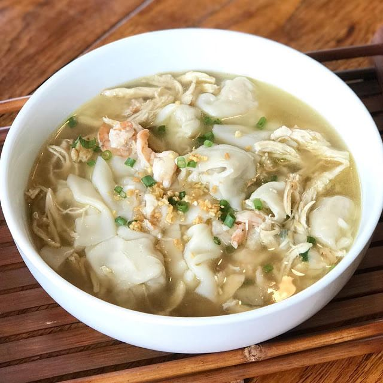

PANCIT MOLO

INGREDIENTS
1/4 ground pork
1 pc egg, beaten
3 pcs Knorr Shrimp Broth Cubes
3 tbsp cornstarch
1 cup singkamas, minced
20 pcs molo wrappers, cut 8 pcs into strips
1 tbsp cooking oil
1 pc small onion, chopped
5 cloves garlic, minced and fried
3-4 cups water
ground black pepper, to taste
1 tbsp spring onions, chopped
1 tbsp garlic, minced and fried
Cook
STEP 1
There are 2 parts in making this dish. Make the dumpling first, then the broth.
STEP 2
Combine pork, egg (dissolve 1 Knorr Shrimp Broth Cube in beaten egg), cornstarch and singkamas.
STEP 3
Wrap a teaspoon of mixture into the molo wrapper and seal by brushing the edges with water.
STEP 4
To make the broth:
STEP 5
Get a pan and make it nice and hot over medium heat. Pour some oil and sauté onion and garlic.
STEP 6
Add water and the remaining Knorr Shrimp Broth Cube and just bring this to a boil.
STEP 7
Drop in the molo dumplings and simmer for 2 minutes.
STEP 8
Add strips of molo wrappers and adjust according to taste.
STEP 9
After simmering for another minute, this dish is done. Serve with a sprinkle of spring onions and fried garlic on top.
STEP 10
Pancit Molo will remind you of home. Comforting, filling and will definitely warm your belly.